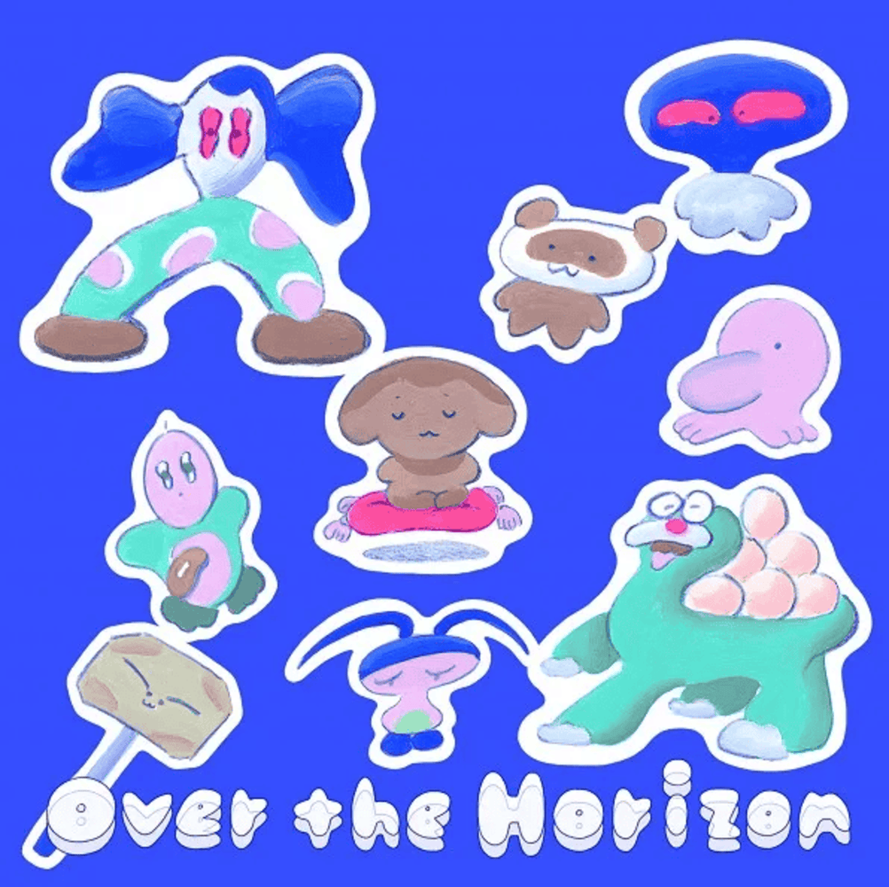

Starting back in 2011 when the Galaxy S2 was first released, Over the Horizon has been a household tune that has deeply embedded itself into the lives of our users. Samsung’s Over the Horizon was first created as a ringtone that captures five keywords that represents Samsung’s image: future-minded, innovation, newness, creativity, and positivity.
The melody starts by establishing a friendly and comfortable atmosphere, leading up to a mid-section consisting of strong and impactful tones, and finally cumulating to a final note that embodies the hopeful message of taking on new challenges. Through this musical journey, Over the Horizon tells the appealing story of Samsung Galaxy’s identity. Over the past decade, Over the Horizon has been enhancing user’s audio experience (AUX) as the signature sound that comes with every Galaxy phone, and has evolved its sounds each year through collaborations with diverse artists.
The Evolution
The Over the Horizon Sound Branding Campaign maintains the familiar Galaxy Theme melody and builds upon new interpretations of the brand sound through various collaborations with artists from diverse genres. Click on the records for each year below to listen to the variations of Over the Horizon through the course of its evolution.
2025
Jacob MannBig Band
2024
Won ilGugak
2023
YaejiElectronic#Rebuild_World
2022
KieferJazztronica#New_World
2021
YirumaNew Age#A_Hopeful_Future
2020
Natural Kinetic InstrumentsCinematic New Age#Digital_Wellbeing
2019
Steven PriceClassical Crossover#New_Adventure
2018
Pétur JónssonNordic Orchestra#Delightful_Surprise
2017
Jacob CollierCrossover#Millennials
2016
Dirty LoopsFusion Jazz#Consideration
2015
Jamie ChristophersonOrchestral Pop#Fresh_Impression
2013 - 2014
Symphony Rock#Life_Companion
2012
New Age#Designed_for_Humans
2011
Rock#Beyond_Smart_Experience
Anyone who has used a Galaxy phone before would be familiar with these six notes. Over the Horizon discovers melodies hidden in the often overlooked sounds in digital ringtones and reinvents them as a unique brand sound. Just as master craftsmen reinvent new techniques based on their basic foundation, we hope to see Over the Horizon continue to introduce new melodies that transcend over the horizon and onto the future.